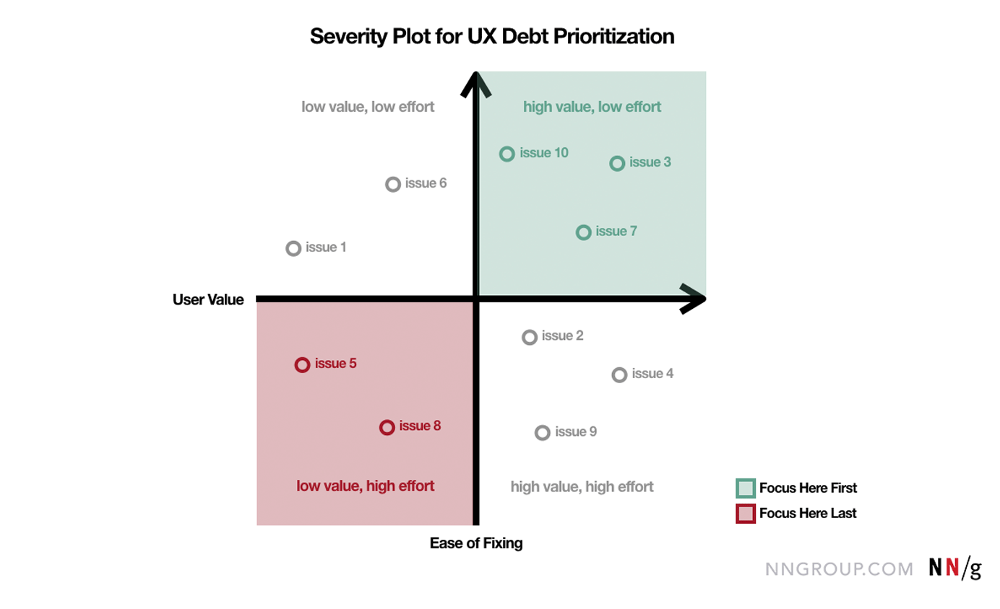
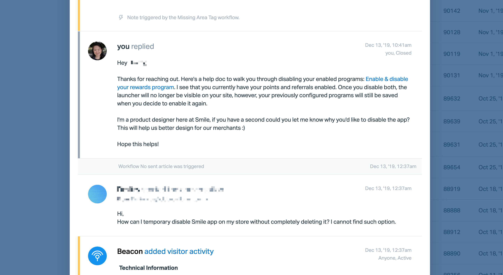
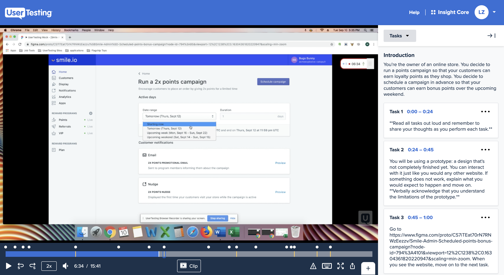
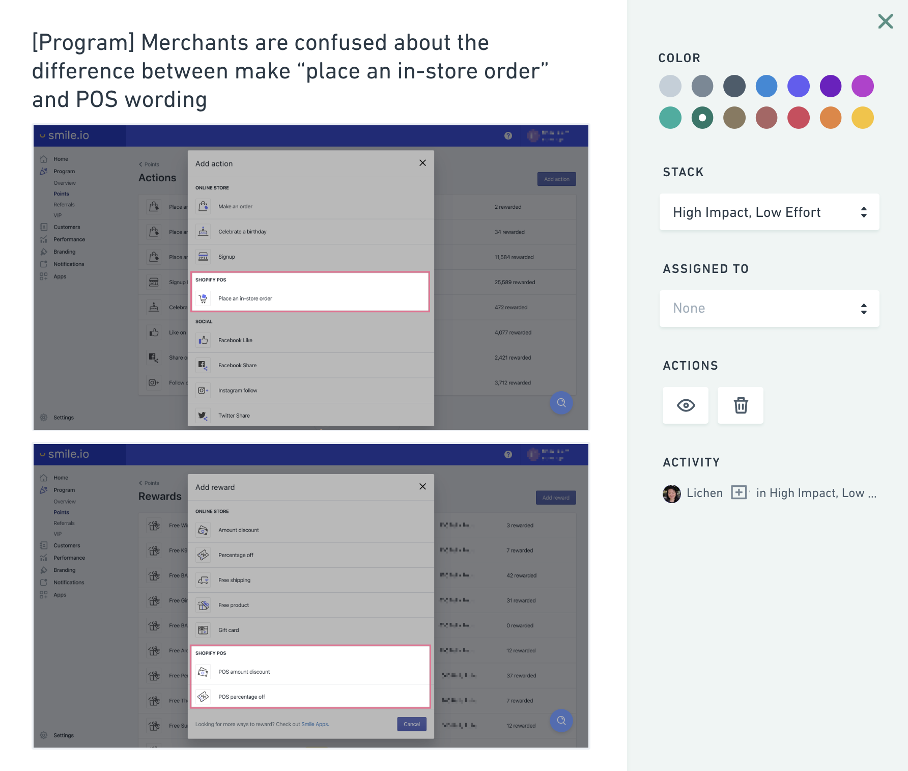
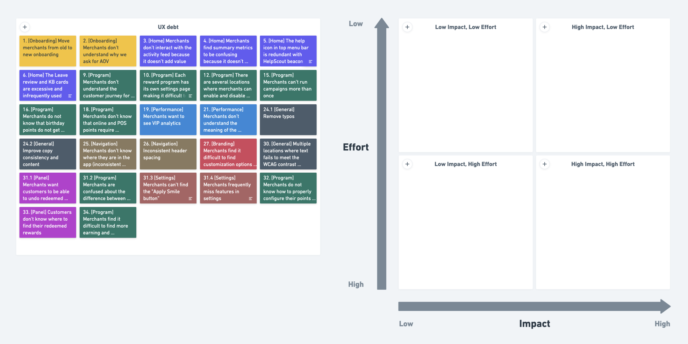
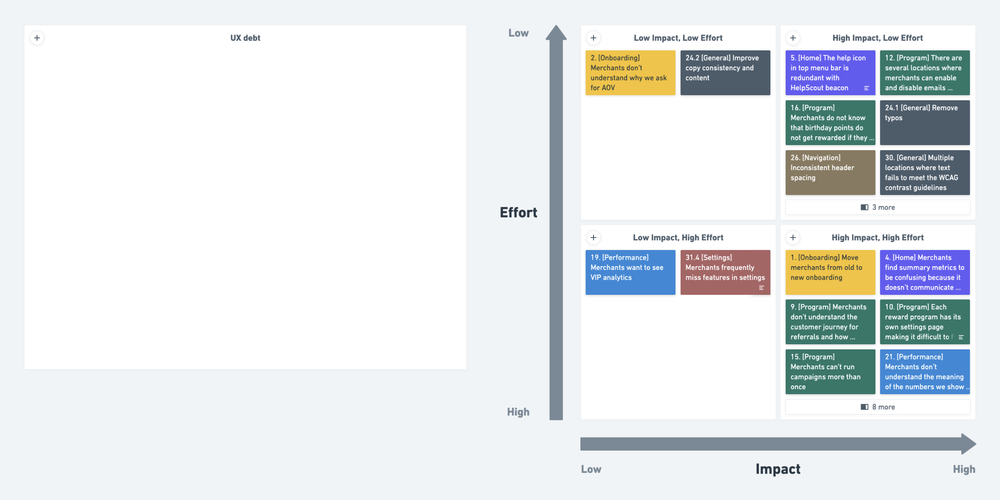

Paying back UX debt
Identifying, prioritizing, and triaging UX debt with product and customer-facing teams
Background
Over the past 7 years that we spent building Smile, we also accumulated a lot of UX debt along the way. One of our objectives for 2020 was to improve our technical and UX foundations. Like tech debt, our UX debt has piled up over time. As 2019 drew to a close, I sought first to identify the UX debt we've collected so that our project teams would be ready to resolve them in the new year. 🕵🏻♀️
Goals to improve our UX foundations were to:
- Resolve high impact UX debt to strengthen our existing product and improve ease of use.
- Decrease the number of support chats and emails to improve merchants’ ability to self-serve.
There are a couple of articles written about how tech companies should address UX debt, but there haven't been many examples where they share their process and show how their product teams make it happen.
Given the abundance of abstracted advice and lack of actual examples happening from fast-growing startups, I thought it would be valuable to share how I identified, prioritized, and triaged UX debt at Smile.
An article from the NN/g was used as a guide to set us up in the right direction. This prioritization matrix was used to evaluate issues relative to one another.

Identifying UX debt
To us, UX debt includes any persistent problems that negatively impact our merchant or their customers' experiences. We looked for UX debt in areas including,
- User interface (e.g. buttons, cards, and visual consistency)
- Copy (e.g. labels, headlines, and messaging)
- Information architecture (e.g. navigation structures and content classification)
- Accessibility (contrast and visual focus indicators)
- Customer journey consistency
In identifying UX debt, we focused on both our merchant and customer facing experiences:
- Smile Admin (merchant-facing)
- Smile UI (customer-facing)
First, I gathered my design team to identify all the UX debt that were top-of-mind (stuff that had been bugging us for ages). These items were the first to populate our UX debt list.
In addition, I set up time with the product (PMs and developers) and support team to open up the discussion and bring forward more UX debt items. Together, we shared trends and patterns we'd seen from analytics or from our support chats to decide if further investigation was needed to build the list. 📃
Perhaps the best way to uncover UX debt was by collecting our merchants' feedback. The sources for user feedback I looked to include,
- Tags and trends on support chats.
- Chat and email conversations we've had with merchants on support chats.

- Ongoing user tests that focus on key user flows.

- Analytics from Mixpanel and Metabase when anecdotal/qualitative evidence weren't enough to give us the context we needed.
Lastly, we worded each issue from our merchants' or their customers' standpoint and how frequently each issue occurs.

Prioritizing UX debt
When we had gathered a list of UX debt issues, their severity, frequency, and location in the user journeys were used to drive their prioritization.
Using color, I categorized each UX debt issue by their location:
Smile Admin:
- Onboarding
- Home
- Program
- Customers
- Performance
- Branding
- Notifications
- Apps
- Settings
- Navigation
Smile UI:
The list of UX debt looked like this:

Triaging UX debt
Once the UX debt issues were categorized, I set up some more time with the product team, including PMs and developers, to place each of the items on a prioritization matrix. However, instead of visualizing the matrix as a scatter plot, I decided to make each quadrant a bucket. The quadrants that were labeled, High impact-Low effort, were the issues we planned to tackle first.
Once we were done, the matrix looked like this:

Since we use Jira to manage our project sprints, I added the High impact-Low effort issues into our first sprint for the new year. By entering these UX debt issues as tasks in Jira, we created a source of truth for tracking the progress of the UX debt, set clear accountability, and created a lightweight road map for whittling down our debt.
After two sprints and several releases, from incremental improvements to modest redesigns, we’ve learned a lot about tackling UX debt as a product team, and the nitty gritty involved in getting these out the door as fast as possible. 💨